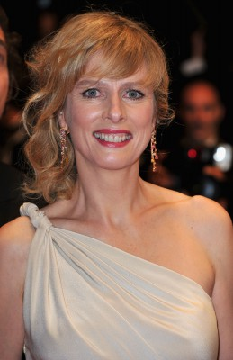
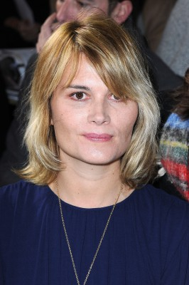
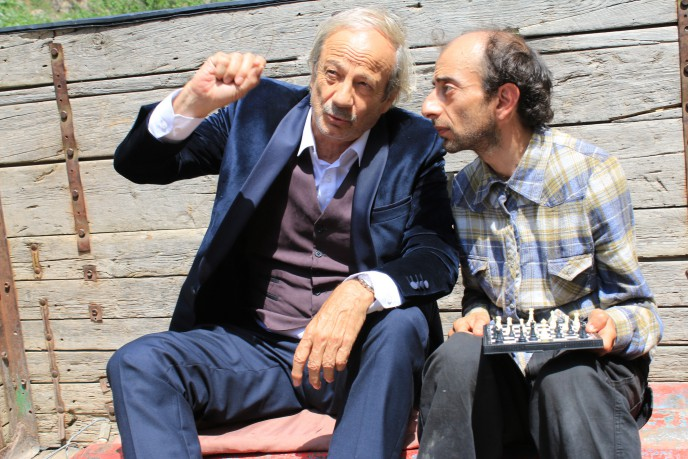
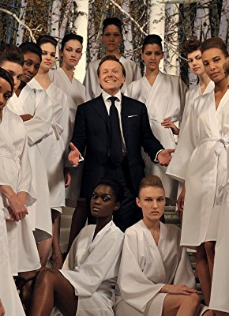

#10410 Affären à la carte

 IMDB-Wertung: 5.8 / 10
IMDB-Wertung: 5.8 / 10  Metascore: 59
Metascore: 59 
So called friends at a dinner party end up acting like a dysfunctional family.
Jahr: 2009
Dauer: 95 Minuten
FSK: 0
Land: Frankreich Studio: Prokino FilmverleihTonspuren:
Untertitel:
Auflösung: SD (608x256) Größe: 699 MB
Genre: Drama, Komödie
Regisseur: Danièle Thompson
Drehbuch: Christopher Thompson, Danièle Thompson
Soundtrack: Nicola Piovani
Darsteller:
-  Karin Viard als Marie-Laurence 'ML' Claverne
 Dany Boon als Piotr
Dany Boon als Piotr Marina Foïs als Mélanie Carcassonne
Marina Foïs als Mélanie Carcassonne- Patrick Bruel als Le docteur Alain Carcassonne
 Emmanuelle Seigner als Sarah Mattei
Emmanuelle Seigner als Sarah Mattei-  Marina Hands als Juliette
-  Patrick Chesnais als Erwann
-  Laurent Stocker als Jean-Louis Mauzard
- Pierre Arditi als Henri
 Marc Rioufol als Daniel Laurent
Marc Rioufol als Daniel Laurent- Guillaume Durand als Guillaume Durand
- Gaia Saïd als L'infirmière
- Sonia Dufeu als Femme restaurant
- Christopher Thompson als Lucas Mattei
- Blanca Li als Manuela
- Jeanne Raimbault als Doris
- Isabelle Cagnat als Mme Bollet
- Cyrille Eldin als Le démonstrateur
- Michèle Brousse als Mme Andrieux
- Michel Motu als M. Andrieu
- Anne Agbadou-Masson als L'attachée de presse
- Paul Bonfiglio als Le fromager
- Stéphane Lauret als Le vendeur Lagonda
- Georges Roche als Le maître d'hôtel
- David Lasserre als Professeur danse
- Jérémy Bardeau als L'interne
- Julie Villers als La réceptionniste
- Pedro Ramirez Rey als Danseur flamenco
- Juan Pedro Delgado als Danseur flamenco
- Javier Cobo Nebrera als Danseur flamenco
- José Maria Maldonado als Danseur flamenco
- Segui als Danseur flamenco
- Claire Chazal als Herself - Elle-même - à la TV
- Eric Moreau als (uncredited)
- Jenny Rieu als Spectatrice #7 (uncredited)
Datei: X:\2009(A-F)\Affären à la carte (2009, FSK0, 608x256).avi seit 05.01.2019
Festplatte: HD 2008(G-Z)-2009(A-F)
 Es gibt insgesamt 91 Filme in der Gruppe '2009(A-F)'
Es gibt insgesamt 91 Filme in der Gruppe '2009(A-F)'